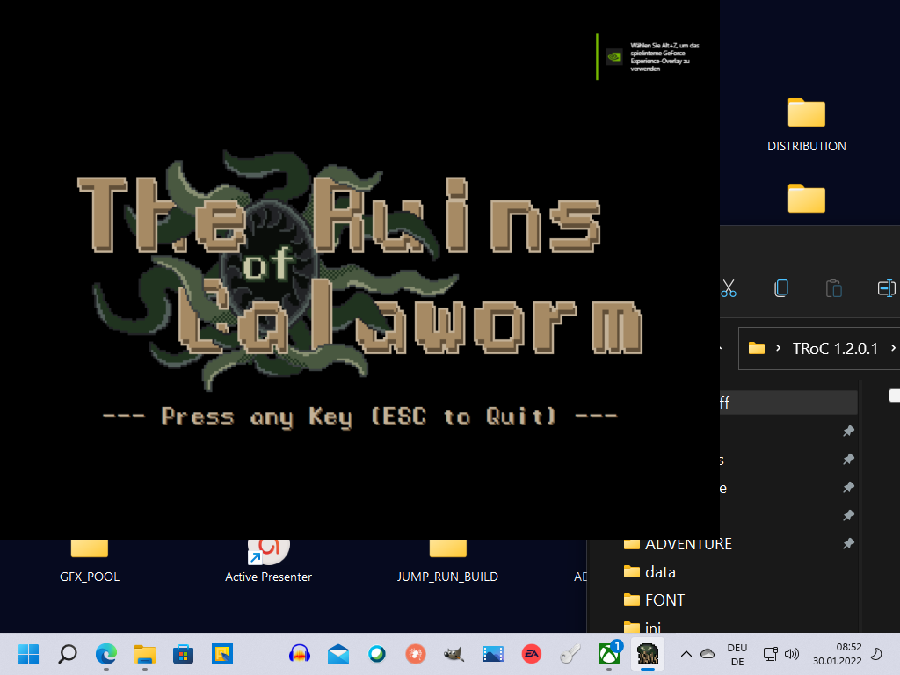

The Ruins of Calaworm
A downloadable game for Windows
 The Ruins of Calaworm
The Ruins of Calaworm
This game is currently in development, but destined to release hopefully some time in 2024. Until then a Demo is available!
Follow me on Twitter to stay up to date.
Turn-based Dungeon Crawler, where cute Retro Pixelart clashes with Lovecraftian Cosmic Horror in a Dark Fantasy Adventure with concise mechanics. No Skill Tree, no Builds, deceptively simple - just you and the Dungeon.
Casual Design, Hardcore Gameplay:
'The Ruins of Calaworm' is a Rework of early 90s german cult phenomena 'Die Gemäuer von Kalawaum' with accessible Controls, tons of new Features and swift Bump into Things-Skirmish Combat with few (visible) Stats, enforcing a more intuitive play style.
Explore procedural Dungeons (randomly assembled from a pool of handcrafted Layouts), traverse Arcane Barriers and Secret Passages, collect Keys and rare Artifacts, equip powerful Weapons like the Blunderbuss or the Alien Energy Coil, and vanquish terrifying Foes, whose mere appearance is fit to shake your very foundation. Insanity is not the end, though, but a whole new Metagame providing additional challenge.
While the buzzword # Roguelike is thrown about a lot these days, 'The Ruins of Calaworm' is actually a pre-Rogue experience (for apt reference think 1979's 'Dungeon!' for Commodore PET): despite contemporary Quality of Life improvements, 'The Ruins of Calaworm' remains a loving tribute to the Golden Age of Gaming and proudly embraces more rigorous Design Patterns of that time.
- Original Music (11 Tracks) by Tom Jensen.
- 5 Tilesets & over 20 Enemies with distinctive Traits.
- 2 Full-fledged Minigames and global Puzzle Objective.
- Unlock Custom Difficulty Sliders
- Thematic Save/Respawn System.
- Editor to create your own Maps.
Links:
- Alexander Karenovics (Programming/Design/Graphics)
- Tom Jensen (Soundtrack)
- Edjielyn Macasaet (Key- and Supplementary Art)
-
Oryx Design Lab (Sounds & Additional Sprites)
- kenney.nl (Additional Sprites)
Download
Install instructions
Requirements to play:
- Recommended: Keyboard with NumPad (Bindings may be customized)
- Recommended: Graphic Card supporting DirectX.9 Subsystem
- 64-Bit Processor
Development log
-
Known Issues // Demo v2.9.9.14
8 days ago
-
Patch v2.9.9.14 // Friendly Water & Widescreen
8 days ago
-
Known Issues // Demo Build 2.9.8.13
Mar 14, 2024
-
Patch Notes (v2.9.8.13) // Better Tutorial & Show Equip
Mar 14, 2024
-
Known Issues // Demo Build 2.8.8.12
Jan 06, 2024
-
Patch Notes (v2.8.8.12) // Epic Devices of Calaworm
Jan 01, 2024
-
Evil grows stronger: New Demo Launch
Dec 12, 2023
-
Patch Notes (v2.6.8.10) // Hotfix Backlink Exploit
Feb 13, 2023
Comments
Log in with itch.io to leave a comment.
The demo is a great deal of fun! I got stuck at a point where I couldn't get back to the trigger to open the door so it didn't seem like I could go forward. But this has a lot of neat ideas and seems like a good start
Thank you for playing! <3
Actually, this can happen. If you use keys in the wrong sequence, or accidentally waste them, you can totally softlock yourself.
Later you'll find Sprints, collect Arcane Resonance, can use Kicks, and also buy Respawn Points to mitigate some of that. As long as you don't reroll the World Seed, the World also stays persistent. So restarting, trying something different, and finding your way around eventually, may be inevitable (it's an old game xD).
The first 2 Regions are procGenerated, afterwards the game picks from a pool of handcrafted Maps, and connects them to a World for you to explore. Full release will also include the Editor, where you can design your own Maps, and thrown 'em into the mix.
I'm going to upload a patch in the next couple days, with some bugfixes, also nerfing the overworld Water-tiles (they won't be deadly anymore), and supporting widescreen.
fucking kraut game
You are a dingaling for not selling this on steam
In all honesty, that's one of the nicest thing anyone has said about my game yet. <3
And apparently I'm the only one that gave it a thumb up. Still primarily aiming for a itch- release, tho, then see how actual reception turns out. Steam is a super-daunting place for first-timers like me, especially for a weird niche game like mine.
Thank you!
I have released I think 6 games on Steam at this point (I am not totally sure the total) starting at the age of 13. You got this dawg.
I am 22 now, almost 23. Maybe you are older, maybe you are younger... it does not matter.
The only downside of Steam is you might want to either wait for that 10k wishlist or whatever, or just release it when you can. A lot of games do not get sales because they are bad. I do not believe your game is bad.
There is no reason you cannot sell it on Steam. In fact, I will be angry with you if you do not.
Just do it.
I would also be curious to see your itch analytics sometime :)
If you wanna dm me: georgehennen on X, george.c.r.hennen@gmail.com is my email.
Very cool theme and immersive atmosphere! My only qualm is that navigating with the numpad took me a while to get used to, which was frustrating specifically because of the tiles that instantly kill you if you misinput and step on them.
Thank you for playing! <3
Full game will let you freely configure keys, however, NumPad for these kinds of roguelikes with diagonal movement are actually optimal; might take a while to get used to it, but it's not so bad.
MouseControls will unfortunately not be a thing, sorry. There's a certain mechanic in the game, which is teased at on Map 3 in the Demo, which wouldn't work at all with MouseControls.
The insta-kill tiles (pits and spikes) are a left-over from the original game "Die Gemäuer von Kalawaum", which this is based on. Mind, that I nerfed a lot about them, e.g. a first time warning, and an successive survival roll for a chance to escape unscathed. :) However, they will stay the way they are ... I like the sense of danger and the stakes the bring with them, when exploring unknown grounds.
Have a nice week, cheers!
Really awesome looking game. Is there a way to play without a num pad? Would love to give this a go but would rather not have to bust out another keyboard to do so.
Hey pavementz,
Thanks so much for checking out my game, and the kind words! <3
It's a roguelike featuring diagonal movement, so NumPad is kinda really the optimal way to play, but you can absolutely customize keybindings to something more of your liking!
Mouse Controls, however, will unfortunately never be a thing ...
Full game will of course have a convenient menu - for now you'll have to "hack" the "customControls.ini"-file, which the game automatically creates for you on startup. It's just a textfile, and actually pretty easy and straightforward to edit: just copy the respective commands from the list next to the action you want to customize. Spaces do not matter, however, absolutely keep the order of things!
Maybe sth. like QWE ASD YXC (ZXC for non-german layouts) might work for you. Or use Arrow Keys for orthogonal movement, and sth. like QW AS for diagonal directions?
Some default keys will always work in certain occasions, like Arrow Keys, Return or ESCAPE.
Hope that was helpful! <3
Fantastic so far, I am really enjoying it.
Oh thanks for the kind words ...
Didn't realize you wrote something here (been to a Movie Festival). :)
I'm gonna soon upload another Demo with lots of polish and stuff fixed, that was still buggy in the Demo (chances are you won't notice, though).
Gameplay is more on the simplistic side, since it stays true to the german original from early 90s, so there's one thing that won't change too much in the future. It is the type of roguelike I enjoy, where you're required to play more "from the guts", instead of crunching numbers.
Cheers!
Moin, willkommen zurück! Wenn‘s ne neue Version gibt ist ja klar, dass ich nochmal meinen Senf dazu geben muss, sei es entweder um dir ein paar Anregungen/Problemstellen aufzuzeigen oder einfach um dir die verdiente Aufmerksamkeit zu geben die ein fleißiger Developer definitiv verdient haha
So viel dazu. Ich bin allgemein sehr froh mit dem Update, viele interessante Schritte wurden getätigt. Aber insgesamt sehne ich mich natürlich nach der Vollversion, um auch endlich Zugriff auf den Editor zu haben, um es dir mit richtig fiesen Dungeon Karten heimzuzahlen für „Die Arena“ vom letzten Build oder für die Kellerebene, die mir dieses Mal die Nerven geraubt hat… ich werde mir da ein paar fesselnde Sachen ausdenken, sei gespannt ;) Dann mal wie gewohnt die einzelnen Stichpunkt, beginnend mit dem positiven:
Lob:
* Arcane Resources/resonance??, das war zwar glaube ich nicht ganz der richtige Name aber ist ja auch egal, eine super Sache ist es trotzdem. Löst elegant die In-die-Patsche-Teleportation, bleibt damit fair in der Hinsicht das man es schon mehrmals probieren kann aber auch nicht unendlich zur Verfügung hat. (glaube ich würde sie sogar eher noch um eins reduzieren, du warst schon sehr großzügig, selbst für schusselige Spieler finde ich). Jetzt hätte ich auch direkt den Kritikpunkt angedeutet das man leider häufig in Türen oder sonstiges teleportiert wurde (nicht von Strudel, sondern von fiesen Trapdoors) und somit kein Symbol auf dem Boden hatte, um zurückzukommen. Aber wenn ich die Patchnotes richtig verstanden habe, hast du das schon direkt gefixt, oder? Wurde mehrmals (!!) wegen der Problematik getrapped, was meine Motivation echt angeknackst hat, bin im Kerker wirklich verzweifelt, weil ich mich fast schon verarscht gefühlt habe, das du mir so ein tolles zurückteleportier-tool gibt’s, es dann aber nicht immer funktioniert… aber gut, scheint aus der Welt zu sein, ansonsten musst du nochmal an die tele-türen, tele-geheimgänge ran, die versauen das Spiel wenn sie einen trappen, egal wie gut man spielt. Die Kickfunktion war da übrigens auch keine Hilfe, hatte da zwar drei Türen aber alle drei mit low-odds, drei mal nicht geklappt..
* Rucksack. Wow, ein Traum wird wahr. Das steigert zwar das sich am Ende eines Runs einschleichende Gefühl „ich bin unbesiegbar, kommt nur her“ umso mehr, da vor der Einführung des Rucksacks war die einzige Sache wie im Kampf noch was scheitern konnte, das in einem ungünstigen Moment deine Waffe zerbricht (oder sogar dein Schild noch dazu). Das gehört dann auch der Vergangenheit an. Somit ist man im Endgame tatsächlich fast OP, aber ich schätze in paar fiese Bosse/oder Teleporthunde mit One-hit werden sich da schon noch gegen behaupten, egal ob man doppelt ausgerüstet ist. (und in fallen kann man ja immer noch laufen haha) Nette Implementierung aufjedenfall aber ich hab’s zugegebenermaßen nicht hinbekommen die Waffe zu wechseln :o kann sein das ich da aus Versehen das tutorial weggeklickt habe… welche Taste wäre das denn gewesen?
Ist es Zufall das man zuerst waffen- und dann schildrucksack bekommen hat? War bei mir 3-mal so, deshalb schätze ich du wolltest zuerst das brauchbarer droppen, oder?
* Zwei-type-magic-doors/Moon-doors. Beides cool, beides schnell verstanden, beides eine Bereicherung für den Rätsel Faktor, beides passend ins Thema. Super Job!! In der ersten Konfrontation mit dem Dreieck/Vierecks Türen war ich bisschen skeptisch, finde visuell könnte es irgendwie noch ein Ticken intensiver voneinander getrennt sein, vllt mit einer noch offensichtlicheren Farbkodierung? Verstehe aber auch das die Welt und die Map jetzt schon echt überladen sind, soll ja auch nicht quietschbunt aussehen das Ganze. Klar kannst du als developer die beiden inzwischen super unterscheiden, weil du sie in und auswendig kennst und 1000x gesehen hast. Ich selber habe dann schon eine Weile gebraucht, um visuell den überblick behalten zu können. Aber für neue Spieler könnte es schon alles ein bisschen zu ähnlich aussehen und für Frust sorgen (gebe ja zu das es mit zwei unterschiedlichen Farben aber auch zu sehr nach Wirrwarr aussehen könnte und wiederum auch Leute abschreckt) weiß auch keine perfekte Lösung, aber ich fande sie ein bisschen zu unintuitiv vom Look (nicht vom Gameplay, das war natürlich schnell verstanden. Ich habe aber dann zugegebenermaßen in den nächsten Stages den guten alten normalen Stern vermisst, aber der kommt sicher in der Vollversion noch ein paar Mal mehr zum Einsatz hehe)
* Sehr gelungen fande ich auch die variierende Sichtbarkeit von Geheimgängen und Fallen, je nach licht und Blendung. War das vorher auch schon so? nee oder? Zumindest nicht in dem Masse, wenn Ichs richtig in Erinnerung haben. Das hat den Effekt das die irgendwann vollkommen in die Laufroutine integrierten Geheimgänge nochmal ein bisschen besonderer werden und lässt einen dann auch nicht the-guard-down lassen bezüglich fieser Pfeilspitzen. Gebs ja offen zu das mir dieses Thema bloß aufgefallen ist nach einer Blendung und einer tödlichen Pfeilspitze :P
Die ein oder andere Frage bzw. Kritik hätte ich aber natürlich auch noch, deshalb:
Verschiedene Anmerkungen:
* Fangen wir was mit was ganz Kleinem an, ich hatte ne Torch in der Hand und wurde geblendet von einer Fledermaus. Finde ich nicht logisch, wenn man eine Lichtquelle sogar bei sich auf dem selben feld hat, sollte man konsequent bleiben und gegen Blendung immun sein, oder was meinst du?
* Noch was eher belangloses, also mein Vollbild will weiterhin immer erst beim zweiten Start des Spiels erscheinen. Davor ist es immer ganz furchtbar gecropped, was sich zwar durch einen Neustart beheben lässt. Ich weiß nicht, ob das an meinem Rechner liegt, aber wäre doch unschön, wenn das jedem neuen Spieler so ergeht, wer nicht die Lösung mit dem Neustart kennt, spielt dann im gecroppten und hat ein nur halb so schöne erste experience.
* Des Weiteren waren ein Teil der Ladescreen-Nachrichten bei mir auch gecropped in der Breite, aber auch nicht alle nur die längeren Nachrichten. Ist vllt auch nur bei mir so, aber du kannst ja mal drüber schauen.
* Ich habe weiterhin nichts mit meinem vielen Geld/Edelsteine anzufangen!! Jaaa, ich weiß Offering wird noch freigeschaltet und es zählt irgendwie so als Art Punkteskala. Aber im Moment lache ich bloß, wenn ich 400 Moneten habe und irgendwie 3 oder von mir aus auch 8 für ein Speichern bezahlen soll. Ich würde das entweder mit jeder stage ca. verdreifachen den Preis oder sogar exponentiell anheben (vllt auch nur im Hardcore Modus oder gibt’s da gar kein Speichern?) Das sorgt für eine spannendere Abwägung / höheren Wertschätzung seiner Geldresourcen und machts nochmal ein kleines bisschen kniffliger, weil man nicht jede stage mit zwei Schreinen 10-mal hinundher speichert. (machts trotzdem aber bei weitem auch nicht zu schwer, selbst schlecht Spieler sollten in der zweiten stage locker 50 Kristalle haben, reicht ja, um selbst bei 3-fachen multiplizieren oder sogar exponentiellen Steigerung einige Male zu speichern.) Nur so eine Idee, aber vllt hast du ja auch noch vieles anderes mit dem Geld vor oder siehst es tatsächlich als nicht so wirklich auszugebende Punkteskala. (an der Stelle aber nochmal ein Lob für den „Blutpakt“, finde es vom Lore super passend und es fühlt sich einfach fair an für eine so unfaire/feige Sache wie Speichern wenigstens kurzzeitig verletzlich zu sein bzw. eine weitere Bezahlung durchs heilende rumrennen hergeben zu müssen, freue mich jedes Mal dran haha)
* Ich fande den Gedanken ganz lustig das verschiedenen Waffen verschieden effizient gegen verschieden Monstertypen sein könnten oder hast du da schon irgendwas in die richtung eingebaut? Zb. das eine Blunderbuss gegen alle fliegende Gegner 1,2x Schaden macht oder ein Dagger 2,5x Schaden gegen bspw. Spinnen oder anderes lategame Monster (eigentlich ausgeschlossen das irgendwer ein Messer so lange mit sich herumschleppt, aber ein lustiger Gedanke wenn man bei einem spinnenboss nicht weiterkommt das man sich dann bei den alten Leveln bedient) Kämpft auch ein bisschen gegen den Sorting-Automatismus an, der sich bei uns beiden wsl inzwischen eingebürgert hat nach den ersten zwei stages: Das man immer nur mit Coil, Blunderbuss oder dem Langschwer herumschnezelt und jeder andere Waffe völlig an Bedeutung verliert bzw. sogar eher nervt, wenn sie im Weg rumliegt und man immer wieder zurückmuss, um eine von den drei relevanten ausgerüstet zu haben Waffen zu haben. Lass es dir mal durch den Kopf gehen, verstehe aber auch wenn das eine zu große Änderung in einer zu weit fortgeschrittenen Spielphase für dich wäre. Bzw wäre es natürlich auch nicht super für den flow bei jedem zweiten gegner nochmal zurück zurenen um die Waffe zu wechseln, aber mit dem Rucksack schon mal wsler inzwischen..
* Große Änderungen in einer weit fortgeschrittenen Spielphase? Hear me out: Wie wäre es irgendwie mit einer seltenen Möglichkeit einen Stein/Mauer/Tür zu entfernen? Sei es durch ein seltenes consumable oder durch eine besondere Waffe, die sich durchs Monstertöten auflädt oder so. Okay klingt echt nicht so ganz reinpassend und du findest vllt eine elegantere Integration, aber es wäre aufregend in vielen Hinsichten: -verhindert eventuell sich festsetzen wegen blöder teleporttüren (da helfen deine Arcanedinger aktuell wie gesagt glaube ich nicht, bloß beim Strudel) - macht neues rätselpotential auf wenn man mal nicht weiter kommt und man sich genau überlegt welcher Stein am sinnvollsten wäre (ich rede hier echt nur von einer seltenen Sache die alle 1-2 stages mal passieren könnte, will auch nicht das man durch die stage wie durch einen Schweizer Käse pflügt) -kann im Notfall mal in einem völlig chaotischen Kampf auch die aller letzte Rettung noch sein. Wenn ich so drüber nachdenke sind das eigentlich meine liebsten Erinnerungen an das spiel: wenn ich mich siegessicher fühle und plötzlich kommen zb. Mo-Gies die mich verwirren, Nachtdrachen die meinen platz switchen, werde corrupted und geblendet und ich teleportier noch panische einen Hund weg etc. etc. und irgendwie habe ich dann doch überlebt und heile mich ganz stolz im geclearten Raum. Da fände ich eine panische Flucht durch die Wand echt ein spannendes last Resort Element. Ich bin aber auch nicht schockiert wenns dir zu strange wäre. Widerspricht ja ein bisschen auch dem bekannten System. Könnt aber sogar auch einen Speedrun-element sein :o aber gut ich bin ruhig mit meinen abstrusen Ideen
* Apropos Consumables: sind die eigentlich ganz raus? Ich habe sie nicht unbedingt vermisst, muss gestehen, dass ich den Shortcut nie wusste und sie deswegen nie benutzt habe, war dann auch näher dran an der originalen Spielerfahrung. Aber verstehe auch wenn sie nochmal wiederkommen für die vollversion, waren schon liebevoll designed und geben auch ne kleine Abwechslung im loot.
* Zuletzt noch die Frage nach statistics? Fände es lustig zu sehen wie viele Schritte, wie viele Kills, wie viel realtime, was war der höchste Schaden etc. Würde eventuell Speedrun auch anheizen ;)
Okay , glaube das wars! Ich hatte jetzt ungefähr wieder so 5-6 Spielstunden, mehr als die Hälfte gingen drauf für einen eher schlechten Seed der mich immer wieder im Keller eingesperrt hat durch Teleport. Danach hatte ich aber einen sehr angenehmen run, recht früh rotes Schild und Energy Coil, aber trotzdem noch einiges an rumgerätselt in der 3. Und 4. Stage. Ich freue mich aufs Plateau und vor allem den Editor!! Mach weitere so, die Zielgerade zur Vollversion steht an und du wirst es schaffen, aber nimm dir ruhig deine Zeit, bis du zufrieden bist. Das Spiel und du verdienst es.
LG Qwayes
Hallo, schön daß du wieder da bist. Habe dich schon vermisst. <3
Ich gehe mal nach und nach deine Punkte durch ... da sind viele schöne Anregungen dabei, einiges davon werde ich umsetzen, woanders kann ich zumindest Kompromisse anbieten, bei wieder anderen habe ich vielleicht in ein paar Tagen eine zündende Idee, wie man diese elegant lösen kann.
Trap-Doors
Die Arcane Resonance triggert in der Tat NUR bei den Random Teleports (Strudel)! Die Trap-Doors sind ein Fallenelement, welche es genau in dieser Form auch bereits im originalen KALAWAUM gab und ein wesentliches Rätselelement darstellen! Sie teleportieren dich nicht random, sondern immer zum selben Zielort, deswegen kann hier die Arcane Resonance gar nicht greifen!
Effektiv sind das einfach Türen, auf die ein Teleporter mit fixem Ziel platziert wurde. Du kannst aber gewiß sein, daß jede Map in jedweder Schlüssel/Schloß-Konfiguration lösbar ist, manchmal kommt es auf die richtige Reihenfolge an, welchen Schlüssel man wo verwendet, und ob vorher einen entsprechenden Schlüssel ausrüstet, den man erst braucht, nach dem man durch die TrapDoor gelaufen ist; denn, wie gesagt, deren Zielkoordninate ist nicht zufällig sondern fix, ein konstantes Rätselelement
Und ein zusätzlicher Bonus-Schlüssel wird pro Region IMMER zufällig generiert.
Aber ich verstehe deinen Einwand, daß die Trap-Doors frustrierend sein können, wenn man mehrfach reinläuft ... das ist eben 90er Jahre-Game-Design, aber ich habe bereits eine Idee, wie man sie etwas "freundlicher" gestalten könnte:
Was hältst du von der Idee, wenn dich TrapDoors (nach dem ersten mal "trappen") daran erinnern, daß sie "magischer Natur" sind? z.B. wenn man direkt daneben steht, dort für einen turn ein Ausrufezeichen-Symbol erscheint? Diese Information könnte auch persistent sein, innerhalb desselben Runs. Also wenn du an einem Schrein respawnst, würde besagte Tür immer noch "wissen", daß sie dich bereits einmal getrappt hat, und es dir beim nächsten Annäherungsversuch mitteilen. Dieser Hint würde, wie gesagt, erst erscheinen, nach dem du bereits einmal in die Falle gelaufen bist; dieses Überraschungs-Element würde ich gerne beibehalten, weil es eben fester Bestandteil vom originalen KALAWAUM Gameplay war.
Rucksack
Um Waffe, bzw. Schild zu switchen, mußt du den entsprechenden Hotkey (W oder S) für einen Moment gedrückt halten! Das war vielleicht mißverständlich im Tutorial ausgedrückt, das werde ich mir nochmal ansehen.
Der Rucksack ist in der Hinsicht gebalanced, daß du nicht mitten im Kampf switchen kannst. Also sobald sich in näherer Umgebung ein wacher Feind befindet, bleibt dir weiterhin nur die Flucht, bzw. primäre Waffe switchen durch aufsammeln einer anderen. Es handelt sich somit mehr um ein freischaltbares QoL-Feature, daß du im Falle eines zerbrechenden Equipment-Items nicht mehr ewig weit zurücklaufen mußt.
Waffen- und Schildrucksack (und in der Vollversion auch der Rucksack für die Consumables) sind random verteilt, allerdings pro Region kann nur einer spawnen. Daß du dreimal hintereinander den Waffen-Rucksack gefunden hast, war also reines "Rogue-Luck". :-)
Zwei verschiedene Arcane Barriers (ehemals Magic Doors)
Um ehrlich zu sein, bin ich auch noch nicht glücklich mit der "Lesbarkeit" der verschiedenen Barrier-Versionen, aber ich möchte das Element auf jedenfall beibehalten, da ich selbst noch nicht alle Rätsel-Optionen, welche sich damit eröffnen, ausgeschöpft habe. Also bezüglich dem Design muß ich auf jedenfall nochmal Hand anlegen; eine bloße farbliche Kodierung kommt allerdings nicht in Frage, da hier Spieler mit Farb/Sehschwäche benachteiligt sein können, also das muß schon irgendwie über äußeres Design/Symbolik ablaufen. Da fällt mir aber bestimmt noch etwas ein.
Stern-Schalter gibt es weiterhin, die betreffen beide Barrier-Varianten! Allerdings ist davon noch nicht viel in der Demo zu sehen, was die Mechanik wirklich ausschöpft; lediglich in der zweiten Map, welche komplett prozedural generiert ist, sind alle 3 Switches vertreten, das ist aber mehr als Tutorial zu verstehen, ein wirkliches anständiges Rätsel kommt damit nicht zustande. Da geht noch einiges!
Moon Doors
Die sind dir vielleicht auch schon untergekommen? Hier muß man zwei Hebel finden um sie zu betätigen. Der Clou ist, daß du im Editor sehr viel mehr Hebel als 2 platzieren darf, letztendlich beim Laden des Levels wählt das Spiel aber nur 2 zufällige aus, so hat selbst der Designer der entsprechenden Map noch etwas zum Rätseln.
Fackel (Blendung)
Guter Einwand. Ich muß gestehen, ich bin gerade auf der Arbeit und habe selbst keine Ahnung, wie genau die Interaktion von Blendung und Fackel abläuft, ist etwas her, daß ich diese Mechanik angefasst habe. Aber deine Überlegung ist legitim ... ganz entwerten möchte ich die "Blenden"-Mechanik nicht, da sie für schöne "Holy Shit"-Momente sorgt, besonders mit dem neuen System der verminderten Fallen-Erkennung. Ich könnte mir aber vorstellen, dem Spieler eine Art Resistenz zu gewähren, solange man die Fackel ausgerüstet hat, bzw. einen einmaligen Rettungswurf, und wenn dieser erfolgreich ist, erhält man dauerhaft gegen dieses eine Monster einen Blendungs-Immunität solange man die Fackel hält. Da lasse ich mir was einfallen, versprochen!
Apropos Monster
Hast du bereits das "neue" Dhole-Monster getroffen? Das sind die roten Würmer, die sich ein- und ausbuddeln können. Die habe ich nämlich, gemäß deinem letzten Kritikpunkt sie seien zuwenig angsteinflößend, generalüberholt. Zumindest kommt ihre Eigenschaft jetzt etwas mehr zur Geltung.
Gecroppter Fullscreen
Was das angeht, bist du bislang der einzige bei dem das Problem auftritt ... ich habe aber die Ahnung, daß es damit zusammenhängen könnte, daß PureBasic (die Sprache in der Spiel programmiert wurde) im Laufe des letzten Jahres ein Backend-Update spendiert bekommen hat, welches die Kompilierung von Assembler auf C geändert hat; daran erinnere ich mich noch genau, das hat mir nämlich eine major Krise beschert, weil danach NIX mehr funktionierte, und ich bereits erwägt habe, das ganze Projekt zu scrappen!
Habe es dann aber zum Glück in den Griff gekriegt, mußte allerdings das Subsystem von OpenGL auf DirectX-9 ändern. OpenGL würde theoretisch auch laufen, allerdings funktioniert da der Alt/Tab-Switch im Vollbild-Modus nicht, und im Editor laggt es etwas. Und da habe ich mich dann für die performantere Variante entschieden.
Was das für dich jetzt konkret bedeutet: du könntest mal versuchen, folgendes Microsoft-Package zu installieren, welches auch moderne Systeme backward-kompatibel macht, ohne die aktuellste DirectX-Version zu überschreiben:
https://www.microsoft.com/en-ie/download/details.aspx?id=8109
Kannst mir ja dann nochmal Rückmeldung geben, ob das Problem damit gefixt wurde. :)
Gecroppte Ladescreen-Nachrichten
Könntest du hier vielleicht einen Screenshot machen und den irgendwo hochladen? Oder direkt an meine Email-Adresse schicken: alexander.karenovics(at)web-punkt-de (habs codiert, damit das keine Bots aufsammeln xD).
//EDIT: Ich überlege gerade, daß das einfach daran liegen könnte, daß ich bei einigen der sekundären Gameplay-Hints, welche in der String-Datenbank hinterlegt sind und von denen beim Wechsel in eine andere Region immer eine zufällig ausgewählt und angezeigt wird, schlichtweg vergessen habe, einen Zeilenumbruch einzufügen ... Habe auch nicht jede einzelne der Nachrichten ingame überprüft. Jetzt hätte ich aber nochmal einen Grund, drüber zu gucken.
Ingame Economy
Was die Ingame Economy angeht, also das Verhältnis von Preisen versus Currency Drops, muß ich dir Recht geben, daß das noch nicht zuende gebalanced ist; habe es für die Demo aber erstmal so gelassen, weil ich primär wollte, daß Spieler in der Lage sind Fortschritte zu machen, ohne gleich an sowas trivialem zu scheitern, daß sie pleite sind und sich dann keinen Respawn mehr kaufen können. An der Kurve werde ich bis zum Release wohl noch schrauben.
Behalte aber im Gedächtnis, daß der Fortschritt alleine schon an Haltbarkeit der Waffen und Schilde gekoppelt ist, also wenn du damit nicht ökonomisch umgehst, hilft dir alles Geld der Welt nicht. In der Demo ist das ebenfalls weniger ein issue, in der Vollversion wird die Welt aber einen Tacken größer sein, selbst auf dem niedrigsten "Exploration"-Schwierigkeitsgrad. Und da muß man besser haushalten, bzw. überlegen, ob ich für diese Stage wirklich den Blunderbuss brauche, oder ob ich bereits stark genug bin, den Rest evtl. auch mit dem Hackebeil aufzuräumen, weil ich es mir eher leisten kann, dieses zu verlieren.
Verschiedene Waffentypen
Sorry, aber das wird es nicht mehr geben, weil es zuviele Design-Probleme mit sich bringt, die zu Balancen das gestreamlinete Combat-System einfach nicht hergeben.
Ein kleines bißchen habe ich in dieser Hinsicht aber experimentiert: vielleicht ist dir aufgefallen, daß das Beil, der Blunderbuss und die Energy Coil einen subtilen Knockback-Effekt haben, welcher das Feld hinter dem Monster bereits während dem Kampf aufdeckt? Somit verschaffen zumindest diese Waffen einem einen kleinen taktischen Vorteil, abseits der Stats.
Mauern entfernen/Consumables
Die Idee mit den Mauern entfernen finde ich sehr interessant, aber auch hier muß ich dich leider enttäuschen; möchte für solcherlei Experimente schlichtweg keine Ressourcen und Zeit mehr aufbringen, da sie zu tief in den game flow eingreifen; ich befinde mich bereits in der Phase, daß ich funktionierende Mechaniken und System "locke" (im Sinne von "abschließe"), also als fix deklariere, und daran nicht mehr herumdrehen möchte, da sie mich an meinem erklärten Ziel, das Projekt in diesem Jahr weitgehend zu einem Abschluß zu bringen, behindern würden.
Sei aber gewiss, daß die Ressourcen-Items, welche in der Demo tatsächlich deaktiviert sind (Consumables und Provisions), tatsächlich nochmal einen zusätzlichen taktischen Kniff in die Sache bringen, die es dir auch in Extremsituationen ermöglichen, manchmal mit heiler Haut davon zu kommen.
Statistics
Gut, daß du das erwähnst, das ist tatsächlich ein geplantes Feature für die Vollversion, ich habe lediglich noch nicht festgelegt, über welche Stats das Spiel alles Buch führen soll ... da hast du mir auf jeden Fall schonmal ein paar nette Ideen geliefert, die es alle ins fertige Spiel schaffen werden.
Coda
In diesem Sinne, bleib mir treu, ich habe jetzt erstmal genug Material zusammen für den nächsten Demo-Patch! Vielen Dank auch für das detaillierte Feedback und die ganzen guten Ideen, da ist einiges Verwertbares dabei! <3
Und wo ich gerade dabei bin: Hast du Discord? Da darfst du mich erne adden, mein Nickname lautet "erdbeerscherge" ... hätte da vielleicht die ein- oder andere Frage an dich, als alten KALAWAUM-Veteranen, die hier öffentlich zu Diskutieren den Rahmen sprengen würde.
LG, Alex
Ich habe etwas Zeit mit dem Spiel verbracht:
Der Retrolook ist gut/cool.
Die Steuerung, daran muss ich mich gewöhnen.
(oder du findest Zeit eine alternative Steuerung einzubauen :))
Das der Bildschirm in 4:3 dargestellt wird ist der gewünschte Style?
Viele Details in der Präsentation, zeigen deine Mühe und Detailverliebtheit.
Vielleicht sind die Tutorials/Hints ein bisschen viel am Anfang, aber das ist nur meine Meinung.
Vielen Dank! <3
Die Steuerung wird man im fertigen Spiel frei konfigurieren können, sie wird aber Tastatur-only bleiben (das ingame-Hauptmenü, welches noch nicht implementiert ist, kann man später aber auch mit der Maus bedienen).
Der 4:3-Look ist gewünscht, da halt Retro-Hommage und die ganze UI und der Bildschirmausschnitt sind darauf zugeschnitten.
Das mit den Tutorials ist ein Kompromiß, der sich aus der ersten Testphase im letzten Jahr herauskristallisiert hat, das sind alles Dinge, mit denen andere Spieler Probleme hatten, bzw. dazu Fragen hatten. Man kann aber auch wahlweise, sobald ein Tutorial aufpoppt, alle Tutorials gleich als gelesen markieren, und dann selektiv an einer Feuerstelle sich das entsprechende heraussuchen, zu dem man Fragen hat. :)
Hey, großer Fan vom originalen Kalawaum hier (Suche es alle 3-4 Jahre mal bei Google um zu sehen ob es nochmal neuen Wind bekommt und war natürlich sehr froh neulich auf deinen Wiederbelebungs-/Verbesserungsversuch zu stoßen)
Bin auch erleichtert zu lesen, dass du den Segen des Ideenschöpfers hast, das wäre ansonsten mein erster Kritikpunkt gewesen.
Habe 2 Runs gestartet, einmal von einem überraschenden Ghoul beenden, einmal im Kerker am Bezwingen einer Spinne gescheitert. Hatte natürlich auch ein paar Vorteile vom alten Spiel gegenüber neuen Entdeckern.
Lob:
* Schöner Mix aus originaler Atmosphäre mit eigner Lovecraft-Ästhetik. Auch etwas abwechslungsreicher zwischen Gemäuer und Wald zu wechseln anstatt wie beim Original am Stück nur stein zu sehen nach der ersten Karte
* Alle spaßigen alten Mechaniken übernommen mit haufenweisen Neuerungen (Verschieden Monsterfähigkeiten sind cool, Schreine etwas Vielseitiger, einführen der Treppe macht Sinn, guter Indikator welche Waffe besser ist, Abnutzung von Waffen mit nachvollziehbaren System)
* Musik und Soundeffekte passen wunderbar, tolle mysteryvibes+retrosound
* Sehr faire Lernmethode bezüglich des Selbstmord im Loch und dem ungewollten Abschließen von Türen. Einmal Warnen danach Knallhart sein ist ein guter Kompromiss. Dazu ist das Eintreten von Türen auch sehr fair und gut geregelt mit random Lebensabzügen. (Meine Kalawaum-Runs endeten meistens nicht durch Monster, sondern durch unumkehrbare Unaufmerksamkeit beim Türdurchschreiten :D)
* Habe einen Boss bekämpft, gute Idee mit der Lebensanzeige, fühlt sich richtig an verschiedenen Kämpfen mehr Bedeutung anzuzeigen
Verschiedene Anmerkungen:
* Fühle mich leider ziemlich orientierungslos. Klar spielt bei dem Gefühl auch der vergleich mit der festen/unscrollbaren ganz überschaubaren Kalawaumoptik mit hinein. Aber auch abgesehen davon habe ich durch das beschränkte Sichtfeld und den vielen kleineren Leveln automatisch das Verlangen nach einer Minimap (welche dauerhaft klein unten in der Ecke bei dem jetzigen Kartensymbol ist) Ist eine spaßige Mechanik das man die Karte nur bei Licht einsetzten kann, bloß muss ich dann quer über die Map bis zum nächster Fackel/Feuer laufen und habe dann wieder vergessen was ich nachschauen wollte bzw. welche Routen mir mit welchen Schlüsseln Probleme machen könnten). Ebenfalls eine gut gemeinte Hommage an Rouge mit der Karte, aber hilft der Lesbarkeit absolut nicht. Vllt dauerhaft eine Minimap um sich zurecht zufinden und zu checken ob man die ganze Karte erkundet hat und bloß bei Lichtquellen hinweise auf die Art der Türen, nur so eine Idee… vllt bin ich aber auch der einzige der sich verloren fühlt.
* Sehr überladen mit Texten, klar gibt es viel zu lernen und man will auch ein wenig Lore reinstreuen und das ganze soll auch ein Rätselaspekt haben, ich weiß ,aber ich habe ähnlich viel Zeit mit lesen wie mit Spielen verbracht. Vllt bessert sich die Wahrnehmung nach einigen Runs wenn man alles auf „nicht mehr erscheinen“ gestellt hat, bloß kann ich mir vorstellen das es ein paar neu Interessierte abschreckt die erst mal ein wenig die Welt erkunden wollen anstatt dauerhaft an der Hand geführt zu werden und allerlei wegklicken zu müssen. Manche aufploppende Nachrichten könnte man vielleicht noch zusätzlich auf Schilder oder Grabsteine packen. Die die es nicht lesen sind dann selber schuld.
* Wenn ich mich recht erinnere konnte man mit „5“ im Original stehen bleiben und die Gegner ein Feld auf einen zukommen lassen und auf „0“ die Waffe wechseln. Würde sich von der Numpad Aufteilung irgendwie natürlicher anfühlen, dass wenn ich auf die mittelste Taste drücke, dass ich dann stehen bleibe. Habe auch das Gefühl das man damals gegen eine Wand laufen konnte um einen Gegner näher kommen zu lassen, habe die Mechanik bei Calaworm nicht gefunden. (Bin mir da aber auch nicht mehr ganz sicher, ist viele Jahre her…) Wäre vermutlich erreicht, wenn ich die Karte mit M häufig öffne und Schließe, aber irgendwie etwas umständlich, oder extra so gewollt? -Etwas komisch das man alles mit den NumPad steuert, aber dann immer zur m-taste auf die Tastatur zurückmuss. Wäre nicht eine Taste näher am Nampad einfacher? (auch wenn dann die „M“ap Verbindung nicht mehr da ist) Vielleicht einfach beides zur selben Zeit ermöglichen?)
* Bin froh über Geheimgänge im Wald und war dann ebenfalls froh im Gemäuer auf einen zu stoßen, bloß habe ich eine abweichende Grafik vermisst. OK, nicht die alte Raute, die war zu offensichtlich. Aber eine minimale Pixelabweichung die bloß bei genauer Observation erkennbar ist wäre glaube ich klug (Oder extra so gewollt?) Sonst bekomme ich als „Gerne-Alles-Erkunder-und-dann-zum-nächsten-Level“-Spieler das Gefühl ich habe nicht alles entdeckt und muss erst gegen jedes Stückmauer probelaufen.
* Die originale Waffen-ableg-Mechanik macht bei Gespenstern Sinn, aber bei fast allen Gegnern darauf zu achten um meine Waffe nicht abzunutzen wirkt etwas lästig. Verstehe den Sinn dahinter, dass man nicht die beste Waffe findet und dann bedenkenlos rumschnetzelt. Aber es macht jeden Kampf gegen Schwächere etwas mühseliger als er eh schon ist, wenn man auf sein Loot aufpassen will. Stört ein wenig den Flow…
Offene Fragen:
* Konnte der Währung bisher noch keine Bedeutung zuordnen aber bin gespannt was dahintersteckt, oder einfach nur „Punkte“?
* Bin auf Rote-Magische Türen gestoßen, bloß abweichende Optik vom Level davor oder gibt es eine andere Mechanik? wenn ja konnte ich sie nicht entdecken
* Hoffe ich stoße noch auf Geister die durch Wände schweben können!
* Bisher kein Artefakt entdecken können welches am Feuer anzuschauen wäre, kommen die erst ganz spät oder hatte ich bloß Pech bei der Erkundung?
* Hier und da waren Blockaden durch evil vibes(oder so :D) beim Entfachen vom Feuer oder beim Hinaufgehen der Treppe. Habe das System dahinter nicht entdeckt, ist es der Boss auf der Karte oder allgemein ein Gegner in der Nähe?
* Hat es „in the long run“ in irgendeiner Form negative Aspekte alle Kerzen/Feuer zu entfachen? Ansonsten sehe ich die zusätzliche Frage vor dem entfachen jeder Kerze/Feuer nicht als sinnvoll an
* Ist der Zauberstab mit drin? Nicht das ich ihn als wirklich sinnvolle Waffe ansehe, ist aber ein spaßiges Extra.
So, habe bloß mal alles runter geschrieben was mir so aufgefallen ist. Vllt ist nach dem nächsten Patch oder ein paar mehr Spielstunden meinerseits auch vieles wieder obsolet. Aber dachte das es dich sicher freut Feedback mit Vergleich zur alten Variante zu bekommen. Hat es Horst Werner schon gespielt? Alles in allem riesen Lob. Tolles Gesamtkonzept für den Reboot, von Spielgefühl über Ästhetik, total geflasht! dachte auch das das erste Release um einiges kleiner wäre, war sehr überrascht um den Umfang jetzt schon. Hätte nie gedacht, dass ich mich so modern nochmal durch die alten Gemäuer schlagen kann. Bin auch sehr gespannt wenn Psyche noch dazu kommt, lässt verschiedene Spieltaktiken und Monstertypen nochmal ganz anders wirken. Bleibe gespannt! Vielen Dank!
Vielen Dank für ausgiebige Probespielen und das Feedback! Zu deiner letzten Frage, ja Horst Werner hat's bereits mehrfach gespielt, einige gute Ideen für das "Rework" habe ich auch dank seinem Feedback eingebaut. Du bist ansonsten der erste von der "alten Garde", der das originale KALAWAUM kennt und sich bei mir gemeldet hat, daher liegt mir dein Feedback besonders am Herzen. :)
Ich gehe mal nach und nach deine aufgeführten Punkte durch:
* TASTATUR STEUERUNG
In der finalen Release-Version wirst du die Möglichkeit haben, die Steuerung an deine Vorlieben anzupassen, versprochen (z.B. die Map auf die [5] legen)! :)
* SOUNDTRACK:
Ich gebe das Lob weiter an meinen Komponisten Tom Jensen (sehr cooler Typ aus Neuseeland, wir haben uns auf Twitter gefunden, und viele Quality-of-Life Features von Calaworm sind seinem Feedback zu verdanken).
* GEWALTSAMES ÖFFNEN VON TÜREN:
Die Mechanik werde ich im nächsten Patch wahrscheinlich streamlinen in der Form, daß man eine feste Anzahl von "Kick"-Credits hat, wo man einen Fehler rückgängig machen kann (also eine Tür einrennen, die man durch Unachtsamkeit selbst geschlossen hat). Dies wird Bestandteil der geplanten "Difficulty"-Sliders für die Vollversion sein, wo man diverse Mechaniken, welche die Gesamtschwierigkeit ausmachen, auf seine Bedürfnisse anpassen kann und so sein Erlebnis customizen kann. Habe mir 4 Optionen vorgestellt: wahlweise 1, 3, 6 oder 10 Kicks pro Spiel; der Schlüssel bleibt natürlich verloren. Es ist auch ein "Hardcore"-Mode geplant, welcher das originale KALAWAUM etwas genauer emuliert: z.B. gibt es keine Warnung wenn man etwas Dummes tut (in eine Falle läuft, oder durch eine Tür mit entsprechendem Schlüssel im Inventar läuft), und man kann die Speicher/Respawn-Option an jedem Schrein nur einmal nutzen, dann muß man sich vorkämpfen bis zum nächsten Schrein (jeder Schrein bietet aber eine gewisse Anzahl an Respawns, 1-4, abhängig von der Laune des jeweiligen Gottes).
* KARTE:
sobald du alle Lichtquellen (Feuerstellen und Kerzenleuchter) auf einer Karte entzündet hat, ist die Karte dauerhaft freigeschaltet! Dann mußt du auch nicht mehr zurück zu einer Feuerstelle laufen um sie zu nutzen. Das siehst du unten auch an der Grafik, vorher ist sie im Schatten, nach dem Entzünden aller Lichtquellen wird die Karte "sichtbar". Vielleicht hilft das ja bei deinen (hoffentlich) folgenden Testläufen ... :)
Ansonsten kann ich natürlich auch wahlweise eine "nützlichere" Karte anbieten, wäre dann ein Feature für die Release-Version, wo man zwischen ASCII und Grafik wählen kann. Wäre das ein Kompromiß? :)
* ZUVIELE TEXTE:
Hier ist es in der Tat schwierig, eine Balance zu finden, die für alle Beteiligten gleichermaßen befriedigend ist. Im nächsten Patch habe ich weitere Texte reduziert und in die sogenannten "dynamischen" Tutorials untergebracht, die einmalig aufpoppen sobald sie relevant werden, dann kann man wählen ob man sie nicht mehr angezeigt haben möchte (diese Einstellung wird in der config.ini gespeichert), aber du kannst jederzeit an Schreinen und an Feuerstellen bereits freigeschaltete Tutorials durchblättern und nachlesen (im kommenden Patch). :)
Welche Art Tutorials notwendig sind, das hat sich nach und nach in vielen Playsessions von unterschiedlichster Seite herauskristallisiert , und ich war selbst überrascht, daß vieles, was für "uns alte KALAWAUM-Veteranen" selbstverständlich ist, bei Spielern, die das Original nicht kennen, für Frust und Unverständnis gesorgt hat ... und das ist das Letzte, was ich möchte. Einiges ist ja auch neu, z.B. die Mechanik mit den "Fumbled Attacks", die für etwas mehr Taktik in den Scharmützeln sorgt, und das muß man einfach erklären, sonst beißt man bereits auf der Tutorial Stage beim ersten Gegner ins Gras (obwohl diese in einer Art und Weise getuned ist, daß man nur mit der Peitsche bewaffnet durchkommt).
* GEGNER "HERANZIEHEN"
Gegen Wände laufen konnte man im alten KALAWAUM defintiiv nicht. :) Ich habe das Spiel im Laufe der letzten 2 Jahre (via DOS-Box) immer wieder aufgemacht und gespielt und seine Mechaniken studiert, um sie möglichst passend umzusetzen. Daß ich die Mechanik mit dem Stehenbleiben und [5] drücken deaktiviert habe, ist in der Tat eine bewusste Design-Entscheidung gewesen, da ich im alten KALAWAUM diese Mechanik selbst erst sehr spät entdeckt habe, und dann fast enttäuscht war um die ganzen tollen "Tanz"-Manöver, die ich ausgeführt habe um ein Monster genau an die Stelle zu dirigieren an die ich es haben wollte. Ich glaube in der Tat, daß dies eine erfüllendere Erfahrung für Spieler ist, ihm/ihr das Gefühl zu geben, daß sie ein Monster "ausgetrickst" haben ... das stumpfe heranziehen durch Abwarten fühlte sich sehr wie ein Exploit an.
Apropos Exploit: da hast du was mit der Karte Auf- und Zumachen gesagt, lol! Darauf bin ich nie im Leben gekommen, also ich fürchte, ich da muß ich mir im nächsten Patch etwas einfallen lassen, damit das nicht mehr möglich ist. ;-)
Hoffe aber doch sehr, daß ich dir meine Überlegungen etwas näherbringen konnte, und du sie akzeptieren kannst. :)
* GEHEIMGÄNGE
Guck dir die Mauern nochmal genau an ... ;-)
* WAFFEN ABLEGEN
In der Tat war es im originalen KALAWAUM die optimale Art zu spielen, in dem man seine Ausrüstungsgegenstände abgelegt hat sobald man sicher sein konnte, das Monster mit der Peitsche besiegen zu können! So hielt man diese länger intakt, da man insbesondere bei Kämpfen gegen Drachen ohne Langschwert und Mithrilschild aufgeschmissen war. Und die Gegenstände im Original KALAWAUM sind sehr rasch zerbrochen, mache schon nach einem Schlag, wenn man Pech hatte, daher habe ich eine etwas freundlichere 2-Stufen-Mechanik implementiert: das erste Mal zerbricht der Gegenstand nicht, sondern bekommt den Zustand "cracked" (kann man an einer Feuerstelle checken), dann ist er auf "Cooldown", also wird früher oder später, nach einigen Schlägen auf jedenfall zerbrechen (bessere Gegenstände schneller als schlechtere).
Im nächsten Patch wird das "Bonus-Abnutzen" von Waffen durch übermäßigen Schaden austeilen übrigens entfernt!
* MAGISCHE TÜREN
Die Farbe der magischen Türen ist lediglich an das Farbschema des jeweiligen Tilesets angepasst, damit es stimmiger aussieht. Es gibt insgesamt 4 Tilesets (das Standard-Set mit den hellen Mauern, die roten Mauern, und dann noch zwei Dungeon Sets für die tieferen Ebenen - von denen in der Demo aber nur eine Region besuchbar ist).
* WÄHRUNG
Die Währung sind in der Tat Punkte (ein Highscore-System muß ich noch implementieren), du kannst dafür aber auch einige Service nutzen, sobald du einen Schrein gefunden hast, z.B. für einen stetig teurer werdenen Obolus einen Respawn-Punkt kaufen!
Schrein-Locations werden prozedural generiert, und einige besondere Mechaniken im Zusammenhang mit Schreinen möchte ich noch nicht spoilern, die werden in der Vollversion eine größere Rolle spielen. :)
* GEISTER
Ja, die gibts auch. Und sie funktionieren exakt wie bei KALAWAUM. :) Allerdings wird der Monster-Pool pro Stage prozedural generiert und im World Seed gespeichert, also kann es durchaus sein, daß du einigen Monstern nur selten oder auch gar nicht begegnest (solange jedenfalls, bis du den World Seed resettest und ein neues Spiel beginnst). Geister sind aber, glaube ich, in der Demo ohnehin deaktiviert, wie auch einige andere der coolsten und gefährlichsten Monster, die erst in der Vollversion ihren Auftritt haben werden.
* ARTEFAKTE
Das ist ebenfalls eine Mechanik, die erst in der Vollversion zum Tragen kommt (ebenso die pnakotischen Fragmente) ... als kleiner Teaser sage ich mal soviel: erinnerst du dich noch, was man beim originalen KALAWAUM tun mußte um die Vollversion freizuschalten? ;-) Sagen wir so, ich habe mich inspirieren lassen, und dann die Mechanik aufs nächste Level gehoben. Du darfst gespannt sein!
* TREPPEN
Treppen und Schreine und Feuerstellen kann man nicht nutzen, sobald ein Monster in der näheren Umgebung ist. Treppen sind eine Neuerung von mir, ich wollte eine Alternative zu den Türen, die beim Spieler etwas mehr "Respekt" und Spannung einfordert: also wenn man einmal eine Treppe nutzt, gibt es keine Gewährleistung, daß man direkt wieder nach oben (oder unten) flüchten kann. Deswegen am besten vorher einen Schrein aufsuchen und das Bindungs-Ritual durchführen!
* FEUER ENTFACHEN
Keine negativen Aspekte, im Gegenteil! Sobald du alle Feuerstellen gefunden hast, bekommst du +1 XP, dein Sichtradius erweitert sich für die jeweilige Region um 1, und du kannst die Karte immer und überall nutzen!
* ZAUBERSTAB
Die entsprechende Waffe heißt bei mir nicht Zauberstab, aber sie ist in der Tat vorhanden (allerdings etwas seltener anzutreffen, da mehr ein Gimmick und nur situationsbedingt wirklich dauerhaft nützlich). :)
In diesem Sinne, vielen Dank für dein Feedback, hoffe ich konnte einige Unklarheiten und Bedenken beseitigen, wenn du ansonsten aber konstruktive Vorschläge hast, habe ich auf jedenfall ein offenes Ohr und ich nehme jede Form von Feedback ernst ... manchmal, wo ich bereits dachte, daß ich auf eine bestimmte Schwierigkeit eines Spielers nicht eingehen konnte, hatte ich einige Tage später aufeinmal die zündende Idee.
Auf jedenfall kommt noch einiges großartiges auf "Calaworm" zu, der nächste Patch droppt wahrscheinlich Ende der Woche. Und allzuweit ist der Weg bis zum Release auch nicht mehr ...
Hoffe du bleibst mir treu (und wenn du noch jemanden kennst, der KALAWAUM damals gespielt hast, dann darfst du ihn gerne auf diese Seite verweisen. :-) Ich habe einen Twitter-Account, wo ich regelmäßig über meinen Fortschritt berichte, und auch besondere Meilensteine hervorhebe und festhalte: https://twitter.com/erdbeerscherge
MfG, Alexander Karenovics
Ich nochmal, sorry ich hatte deine Frage mit den Leuchtfeuern mißverstanden, bzw. nicht gründlich gelesen ... du meinst natürlich die Frage, ob man überhaupt entzünden möchte!
Da hast du nicht ganz unrecht, zumindest bei den Feuerstellen könnte die Frage theoretisch entfallen. Es ist allerdings auch so, daß das Entzünden einen Zug kostet, und wenn einem, im Falle von Kerzenleuchtern, ein Monster auf den Fersen ist, würde man so einen Treffer kassieren.
Feuerstellen kann man dagegen nur entfachen, wenn kein Monster in der Nähe ist, aber auch hier könnte der Fall eintreten, daß ein Monster z.B. nur kurzfristig außer Reichweite ist weil es gerade auf der Flucht ist, bzw. bereits auf dem Rückweg, und grundsätzlich möchte ich hier den Spieler zu nichts zwingen, was evtl. irgendwelche negativen Auswirkungen haben könnte, deswegen die Frage nach Bestätigung. :)
Die Alternative wäre, Interaktionen mit Objekten grundsätzlich frei verfügbar zu machen, das gefällt mir aber thematisch nicht, da es eben auch etwas Vorfreude bedeutet, sobald man ein solches Objekt gefunden hat und evtl. selbst etwas dafür tun muß damit man endlich in den Nutzen kommt (=> Erfolgserlebnis/Belohnung).
Kerzenleuchter sind dahingehend eine Ausnahme, weil deren primärer Nutzen darin besteht, einem schon vorher Monster zu zeigen, welche auf der Lauer liegen, aber noch nicht aktiv sind. Und deswegen greifen hier auch die "Evil Vibes" nicht. ;-)
Okay, vergiss das alles, habe eine Lösung gefunden. xD
Ich bin das alles viel zu verkopft angegengen; also long story short, in der nächsten Version fällt die Abfrage weg, man entzündet Lichtquellen automatisch, wenn man "dagegen" läuft - natürlich funktioniert das nur, wenn einem kein Monster auf den Fersen ist.
Vielen Dank für den Hinweis, die ganze Logik dahinter war ein Relikt aus früheren Zeiten, als die Leuchtfeuer noch andere Mechaniken inne hatten.
Soo, hatte länger keine Zeit zu spielen aber habe endlich nochmal 2 lange und 2 kurze Runs machen können. Hier nochmal einen Schwall an Gedanken. Habe ja mit dem neusten 1.4er Patch gesehen, dass du das ein oder andere ebenfalls für schlüssig gehalten hast.
Lob:
*Sehr gute Besserungen bezüglich Übersichtlichkeit. Karmic Memory klingt sinnvoll (besonders mit Ausschaltmöglichkeit für Hardcore/Kalawaum Variante) und Ortsnamen beim Betreten eines neuen Bereiches ebenfalls hilfreich.
*Danke für „alle tutorials ausschalten“. Erleichtert das reinkommen. Hatte schon Angst das damit die Warnung bei Löchern/Stacheln wegfällt aber dem ist zum Glück nicht so :D
*Besserer Spielflow mit dem Anzünden von der Fackel. Sehr gut
*Habe nochmal ein paar neue Monster kennengelernt. Bin echt hin und weg von der Vielzahl an Effekten. Macht das Gameplay um einiges spannender und kniffliger als beim Original. Bin wahnsinnig gespannt was da alles noch in der Vollversion schlummert.
*Hier auch nochmal viel Bewunderung für die schönen Maps. Wunderbar abwechslungsreich und viel Lebendigkeit durch viele Geheimgänge (die ich inzwischen doch ganz gut erkenne :) ) Muss an dieser Stelle auch gestehen das mich der lange schmale Säulenslalom mit dem Loch am Ende erwischt hat … Chapeau (habe aber irgendwie eine ferne Erinnerung das etwas recht ähnliches im Original war, nicht?)
Verschiedene Anmerkungen:
*Habe eine Art Bug erwischt der meinen aktuellen Run blockiert. Das Abändern der Türenaufbrechfunktion ist sinnvoll, aber reagiert das „garantierte Aufbrechen“ einer Tür in der Mann sich eingesperrt hat nicht, wenn man sich mit dem Portalfeld in einen verschlossenen Raum teleportiert. Da du so fair bist und die Möglichkeit bietest definitiv ausbrechen zu können beim einschließen sollte das auch beim random einschließen durch Teleportation erlaubt sein, klingt zumindest für mich schlüssiger.
*Finde die Fähigkeit von Rat-thing etwas schwierig für den Start. Es bringt einem gut das Weglaufsystem bei bzw. welche Probleme ohne dies entstehen können. Aber hatte 2 direkt Restets in den ersten 30 Schritten, weil ich schlechtes RNG gegen das aller erste Rat-thing hatte, im Kampf hinten liege und nicht weglaufen kann um mich zu heilen um den First-hit-bonus zu bekommen. Könnte mit etwas Pech neue Spieler demotivieren, wenn sie schwache Schläge austeilen. Wie wärs wenn der erste Gegner garantiert ein Kultist ist?
*Habe noch kein Optionsmenü entdeckt, fände einen Helligkeit/Gamma-regler angenehm, da die ganze Optik logischerweise etwas dunkel ist, wird es schnell etwas düster bei schlechter Sonneneinstrahlung
*Ich bin ein recht rasanter Spieler, hier und da mache ich damit mal ein Fehler (sei es first-hit verpassen oder sogar hier und da sogar ein Loch/Stachelfalle :o) das ist natürlich mein Risiko, aber ziemlich häufig bin ich ziemlich ratlos weil ich einen schritt zu weit Laufe und die Lebenspunktansage eines Gegners wegdrücke bevor ich sie sehen konnte. Oder dass ich etwas schneller durch ein erkundetes Gebiet laufe und eine Message aufploppt und direkt wieder geschlossen wird und ich keine Ahnung habe was es für Infos gab (schätze das es meistens der Hinweis das ein Monster durch eine Falle gestorben ist). Long Story short: Ein abrufbares Log in irgendeiner Form erscheint mir sinnvoll. Also einfach eine „letzte Nachricht erneut zeigen“-Taste. Wenn ich mich recht entsinne war das beim Original damals ganz gut zu sehen, ich glaube das waren ja immer mehrere Zeilen die sich hochgescrollt haben, da konnte man immer noch lesen wie viel Leben der aktuelle Gegner hat. Bei einem ungünstigen encounter bei dem man Abwägen muss, ob ich den einen Schlag in Kauf nehme beim fliehen kann es sehr relevant sein.
*In 3 (!!) verschiedenen Runs ist mein Hexen-Boss auf der zweiten Map beim Fliehen vor dem Sterben in die Stachel/Pfeilfalle gelaufen. Etwas traurig. Weiß noch nicht einmal wie viel Leben sie dem Spieler gibt. Bekomme immer nur +1, bei normalen Gegner-selbstmord sehr fair, bei der suzidalen Hexe etwas störend, da man der dicken Lebensbelohnung hinter trauert für einen benötigten kontinuierlichen Fortschritt.
*Effekte sind wie gesagt sehr spanned und vielseitig aber manche können statt ins angenehm knifflige eher ins nervige tendieren. Nach jeder Fledermaus ewig zurücklaufen um einen Fackel/Feuerstelle zu finden. Joah, lustiges Prinzip, fände Blendung aber bestrafend genug, wenn es 20/30/?? Schritte halten würde. Ist fair das die Blendung kontinuierlich abschwächt, aber um es ganz weg zu bekommen würde mir Schrittzahl reichen anstatt Fackel/Feuerstelle. Aber verstehe den Reiz hinter dem aktiven satt Passiven Regenieren schon, kommt halt auf die Entfernugn zur nächsten Feuer an ob es einem die Geduld raubt. Ähnlich mit Verwirrung.(also invertierte Steuerung) Ist fies und lässt einen schön aufmerksam bleiben, aber würde die Dauer etwas verkürzen, hält meistens sehr viel länger als der Kampf und um nicht in Probleme zu geraten im nächsten Raum laufe ich dann einfach ca. 30 mal von links nach rechts bis es weg ist. Sollte ja eigentlich auch nicht sinn von Effekt-Bestrafungen sein bloß Schritte zu spammen.
*Will ja nicht zu viel nörgeln :P aber habe tatsächlich dasselbe „no-message-to-ignite“ Bedürfnis auch beim Lagerfeuer wie bei der Fackel (außer vllt beim ersten Mal zum Beibringen für neue Spieler). Wundert mich das du die Geduld mit der zusätzlichen Wegdrückaktion behältst. :D Passiert es bei deinen Testruns nicht ständig das du ein Feuer anzündest, aber die Funktionen des Feuers nicht nutzt? Ich nutze nur ca. jedes 3. Feuer um meine Waffen zu checken (Notes habe ich glaube ich alle durch) bei allen andern muss ich immer auf leave drücken. Habe den Eindruck das ein flotter Run ebenfalls mehr flowt wenn man sich das extra-leave-drücken beim Lagerfeuer spart. Aber gut, die Artefakt checken Funktion ist auch noch nicht aktiv.
-An dieser Stelle aber nochmal Danke für die „Leave“ Standardauswahl beim Tür-ohne-passenden-Schlüssel-auswählen. Eine gesparte Eingabe mehr!
Offene Fragen:
*Ist die Rotation der Startmap vom Seed abhänig oder hast du sie allgemein geändert?
*Cool das die Sachen im Schrein jetzt kosten. Aber warum nicht die Council-funktion? Finde es sehr fair für die Schlüssellösung etwas zu bezahlen, war beim Original ja nicht anders und ist eine riesen Hilfe statt des mühseligen ausprobieren zu Beginn eines neuen Runs. (und als Schummler hat man dann immer überall Notizzettel mit der Schlüssel-Tür-Kombinationen für jeden Run in der Wohnung rum liegen. Genau wie damals, Danke nochmal für diesen Nostalgieschub :D )
*Mein bester Run der glaube ich fast alles entdeckt hatte (bzw. auf sehr viele End-of-demo-Grabsteine gestoßen ist) wurde überraschend von einem Ratthing mit ca. 130 Leben beendet, weil ich etwas zu schnell in eine andere Richtung wollte und den Monstereffekt vergessen hatte. Sehr fies von dir die wiederkehren zu lassen, aber wird mir eine Lehre sein. War es so geplant das man mit schwachen Raten am Anfangen konfrontiert wird aber sie nochmal stark wiederkommen? Oder einfach Monster-spawn-zufall?
*Allign the stars wird von dir ja noch mit einem tieferen Sinn geteastert, also bleibe ich da noch gespannt. Aber es klingt so als könnte man alle Level am aller ersten Schrein schon durchspielen oder? Wäre doch lustiger, wenn jeder Schrein nur ein „Allign the stars“-Level hat damit man sich bei jedem auch nur einmal +1 Leben holen kann und nicht direkt hochlevelt, oder war das auch sowieso so geplant?
* Habe glaube ich im ersten Level kein zusätzliches Leben bekommen, ist das so gewollt oder hatte ich einfach nur Pech mit zu leichten Gegnern?
Vielleicht waren da ja wieder sinnvolle Gedanken dabei. Hoffe ich konnte ein paar Anregungen geben, aber brauchst das ein oder andere wegen meinen Wehwechen nicht nur mir zu liebe abändern, ist immer noch dein Spiel ;).
Bin grade etwas am Trauern um das Ende eines soliden Runs durch den Teleportation-Einschließ-Bug, aber das gehört beim Prerelease testen nun mal dazu. Habe dennoch wieder viele interessante neue Sachen entdeckt. Bin jetzt wieder eine Weile nicht im Lande, aber freue mich jetzt schon auf die kommende Entwicklung. Stay motivated!
Hey,
Super, daß du noch da bist und vielen Dank für die weiteren Anregungen, ich denke, daß ich das meiste davon relativ easy fixen, bzw. mich inspirieren lassen kann.
TÜR AUFBRECHEN / RANDOM TELEPORTATION
Ich verstehe was du meinst, und werde mir durch den Kopf gehen lassen, ob man da etwas machen kann ... beim original KALAWAUM konnte es noch ärgerlicher kommen, daß du dich in einen Bereich eingeschlossen hast mit nur dunklen magischen Türen, wo man gar keine Chance hatte rauszukommen. Allerdings konnte man da beliebig "save scummen", also einfach neu laden und es neu probieren.
Ich habe zumindest einen saveguard in der Hinsicht eingebaut, daß dies bei mir nicht passieren kann ... also eine random Teleportation wird dich grundsätzlich nur zu einem Ort bringen, wo du "theoretisch" entkommen kann, allerdings berücksichtigt er nicht, ob du entsprechende Schlüssel bei dir hast (das wird mittels eines FloodFill-Algorithmus festgestellt). Einfach den Spieler die Tür aufbrechen lassen nachdem er zufällig teleportiert wurde, bringt allerdings eine ganze Ecke an Design-Problemen mit sich - wenn du selbst eine Tür abschließt, "weiß" die jeweilige Tür, daß sie abgeschlossen wurde und daher den Weg frei machen muß, bei einer random Teleportation ist das nicht so einfach festzustellen; auch ist es schwierig, so etwas dem Spieler logisch zu erklären, und die Intention hinter dem neuen Tür-Aufbrechen Mechanik war ja, die Sache einfacher verständlich zu machen, und aufeinmal mit "kostenlosen Aufbrech-Credits" um die Ecke zu kommen, öffnet Tür und Tor für Exploits, bzw. macht die Sache eher clunky und komplizierter; z.B. müßte dann auch geklärt werden, wie lange solche Aufbrech-Credits gelten, wann sie verfallen, ob sie verfallen, und sowas möchte ich eigentlich nicht in Tutorials packen, da es sich um einen Fix für einen edge case handelt, der aber sonst eher Stirnrunzeln hervorrufen dürfte. Aber ich sehe definitiv das Problem, werde drüber schlafen und vielleicht habe ich dann eine gute Idee ...
RAT THINGS
Auf der ersten Map findet sich ein Grabstein, der einen recht eindeutigen Tip bez. Rat-Things parat hat ... vielleicht ist dir bereits aufgefallen, daß du unendlich um Hindernisse herumlaufen kannst, ohne daß Rat-Things einen zweiten Schritt bekommen? Also da gibt es ein Muster, und wenn du das geknackt hast, sind Rat-Things eigentlich kein Problem mehr - ein bißchen wie die Geister im originalen Kalawaum. ;-)
OPTIONS MENÜ
Existiert noch nicht, das kommt in der finalen Version, sobald eine "richtiges" Hauptmenü existiert, mit Hintergrundbild, und so. :-) Die Sache mit der Gamma-Regelung wird wohl nicht kommen, das Spiel ist nativ in PureBasic geschrieben, und fancy Shader-Coding ist damit leider nur bedingt möglich, bez. geht weit über meinen Verstand. Sorry!
MESSAGE LOG
Sehr gute Idee! Dürfte recht einfach umzusetzen sein, könnte sogar die letzten paar Messages speichern, daß man diese dann hintereinander abrufen kann, sofern man möchte.
Kommt definitiv!
ERSTER BOSS
Daß die Hexe in Spike Traps läuft, passiert mir hin und wieder auch, aber hier würde ich sagen, das ist (Roguelike-)Pech, da Spawn-Locations der Monster zufällig sind. Du bekommst aber mit der Zeit den Dreh raus, daß du alleine mit deinen Bewegungseingaben die Gegner "fernsteuern" kannst, also deren Bewegungsmuster deterministisch ablaufen, in Relation zu deiner Position (bis auf die Ghoule, die hin und wieder zufällige Schritte machen dürfen), damit lässt sich das mitunter auch aktiv vermeiden, und ist ein sehr schönes Erfolgserlebnis, wenn man es mal raus hat. :)
Vor Bossen kannst du übrigens einmalig, nach dem ersten Treffen, fliehen (diese schlafen dann wieder ein) und lassen dich erstmal in Ruhe. Beim zweiten Mal bleiben sie aber aktiv. Ist dir übrigens aufgefallen, daß jedes Monster einem bestimmten "Covenant" angehört, der mit einem der 4 Götter übereinstimmt, denen die Schreine gewidmet sind? Das ist kein Zufall, hier gibt es einen kleine thematische Mechanik zu entdecken, die dir evtl. eine schwierige Entscheidung abfordert, wenn man sie einmal raus hat - die werde ich aber definitiv nicht spoilern, da du früher oder später selbst drauf kommen wirst, da bin ich mir sicher!
Der erste Boss ist übrigens, aus Story-Gründen, immer die Hexe. Danach können auch andere Monster als Bosse erscheinen. Die Hexe bringt dir auch die Mechanik mit der umgekehrten Steuerung bei (diesbezüglich gibt es in der vollen Version übrigens noch eine weitere, überraschende und spaßige Facette zu entdecken). Die Verwirrung wird übrigens immer geheilt, sobald du ein anderes Monster als eine Hexe im Kampf besiegst, Verwirrung lässt sich NICHT durch Herumlaufen heilen! Wenn du eine andere Hexe besiegst, kannst du Glück haben, und ebenfalls geheilt werden, wird aber zunehmend unwahrscheinlich. Aber jedes andere im Kampf besiegte Monster ist eine garantierte Heilung!
FLEDERMÄUSE/BLIND CONDITION
Verstehe was du meinst ... mir gefiel halt die Idee mit der 2-stufigen Heilung: zuerst der automatisch verschwindende Effekt, danach noch der statische Effekt, der dich aber nicht allzusehr spielerisch einschränkt, außer daß dein Sichtradius um 1 geringer ist, und du keine Geheimgänge mehr erkennen kannst. Evtl. fällt mir hier aber ein interessanterer Kompromiß ein ... bin damit noch nicht fertig, versprochen! :)
FEUER/NO MESSAGE
Easy Fix, wird gemacht. :) Also das erste Mal gegenlaufen entzündet das Feuer, dann das zweite Mal dagegen laufen öffnet das "Ausruhen"-Menü, okay? :-) Würde es aber zumindest so einrichten, daß beim ersten Feuer nach Startup das "Ausruhen"-Menü einmalig automatisch aufgerufen wird.
ROTATION/FLIP-ORIENTATION
Wird zufällig bestimmt und im Seed gespeichert.
COUNSEL-KOSTEN
Das war tatäschlich eine Design-Entscheidung über die ich seeeeehr lange nachgedacht habe. xD Meine eigene Erfahrung mit KALAWAUM war, daß ich mir zu Beginn eines neuen Spiels einmal die Door/Lock-Lösung aufgerufen, und einen Screenshot gemacht habe. Dann hatte ich sie immer parat, und daher sehe ich es tatsächlich eher als Schikane an, dem Spieler dafür noch einen Credit abzuluchsen, und das Spiel kann schon fies genug sein, da ist so eine freundliche Geste doch auch mal ganz nett ... was nicht heißt, daß ich deine Überlegung nicht nachvollziehen kann, aber aus Game-Design-Perspektive denke ich, daß es so besser ist, wie es jetzt ist, Nostalgie hin oder her (Horst Werner hat sich auch noch nicht beschwert xD).
//EDIT: Mmmh, könnte mir mittlerweile vorstellen, das zumindest für den Hardcore-Mode anzubieten - quasi als nostalgisches Easteregg.
MONSTER POOL PRO LEVEL
Der Monster-Pool pro Level wird beim Reroll des World-Seeds einmalig zufällig bestimmt, danach bleibt er konstant, bis du den Seed neu würfelst; jede Stage hat einen Pool von 6 zufälligen Monstern, mit unterschiedlichen Spawn-Raten (von selten bis häufig). Zu Beginn ist er relativ deterministisch, also auf der ersten Stage hast du IMMER Kultisten und Rat-Things, das war's. In der zweiten Stage kommen Ghoule und Deep Ones hinzu. In der dritten Stage Bats und Snake Scions. So wird der globale Monster-Pool beständig erweitert, bis dann in Stage 6 alle Monster "freigeschaltet" wurden. Und aus diesem globalen Pool schöpft sich jede Stage ihren persönlichen lokalen Pool aus max. 6 zufälligen Monstern mit Spawn-Raten von 1-6. Auch die Boss-Klasse wird auf diese Art zufällig bestimmt (aber nicht jede Stage hat einen Boss, außer die Hexe in Stage 3, bzw. 2 - ich fange bei 0 an zu zählen, Stage 0 ist die Tutorial Stage wo man im Grunde gar keine Ausrüstung braucht, und IMMER nur mit Peitsche bewaffnet durchkommt). So bleibt es selbst für mich spannend, welchen Monstern ich bei einem Run begegne, aber sobald man mal weiß, welche Monster sich auf welcher Stage befinden, dann kann man daraus lernen - aber halt nur so lange, bis man den Seed neu würfelt, dann werden alle Karten neu gemischt.
Übrigens wird auch die Reihenfolge der Stages anfänglich zufällig bestimmt - hier kommt ein recht perfider und semi-intelligenter Algorithmus ins Spiel, auf den ich sehr stolz bin, der die Map-Links scannt und daraus eine einzigartige Konfiguration erstellt und im Seed speichert. Das Feature gab es im originalen KALAWAUM nicht, aber es erhöht den Spielwert doch enorm, vor allem in der Vollversion, wenn noch einige "Lückenfüller"-Maps hinzukommen, und so das System wesentlich mehr Gewichtung bekommt, als es in der relativ geradlingen DEMO noch der Fall ist ... du wirst es am ehesten an dem Dungeon-Level merken: je nachdem was für eine Information dein Seed hast, sind da die Monster stärker oder schwächer, sollte also früher oder später besucht werden, und das Planen deiner optimalen Route gehört zum Erlebnis dazu ... solange du den World Seed aber nicht resettest, bleibt auch die optimale Reihenfolge der Stages gleich!
ALIGN THE STARS
Den +1 Lebenspunkt beim Lösen des Minigames gibt es tatsächlich nur 1x pro Schrein fürs erste Mal lösen des jeweiligen zufällig erstellten Puzzles. Danach wird ein neues Puzzle generiert (und je nachdem wie weit du fortgeschritten bist), auch die Schwierigkeit erhöht. Die damit zusammenhängende Mechanik hat was mit der angeteaserten "Insanity"-Mechanik in der Vollversion zu tun ... die wird übrigens optional sein, man kann sie auch ganz abschalten, da ich mir nicht sicher bin, daß jeder das mag, da sie eine zusätzliche Schwierigkeits-Faktor reinbringt - ich liebe es, da mit sehr diversen und thematischen Möglichkeiten versehen, die das Lovecraft-Flair erst so richtig greifbar machen. Aber es hat das Potential zum Spalter, deswegen wird es eine Option.
XP IM ERSTEN LEVEL
Das ist korrekt, auf der ersten Stage kannst du durch Besiegen von Monstern nicht aufleveln, da jedes Monster dort einen Hitpoint-Cap von 20 hast, und du nur stärker wirst, wenn du stärkere Monster besiegst. Die beiden XP-Punkte, die du dort erhalten kannst, sind speziellen Events geschuldet: einmal wenn du alle Monster besiegt, UND die Hexe angetroffen hast (das passiert NUR auf der Tutorial Stage), und sobald du alle Feuer entzündet hast (das ist eine Belohnung, die man in jeder Stage einmalig erhalten kann).
So, das war's erstmal. Puh, viel geschrieben, viele gute Ideen! Ich glaube, Priorität hat zunächst mal, eine zufriedenstellende Lösung für die Sache mit der Teleportation in abgeschlossene Räume zu finden ... das System habe ich offensichtlich nicht zuende gedacht. Bin aber zuversichtlich, daß mir was einfällt ... ich halte dich auf dem Laufenden!
LG, Alex
Tada! Es ist soweit: nach ca. 20/25 Spielstunden habe ich die Demo durch. Uff, war ganz schön challenging von Zeit zu Zeit. Die Arena ist brutal und vom Kerker will ich gar nicht erst anfangen. Also ich behaupte jetzt einfach mal für mich das ich das aktuelle Spiel abgeschlossen habe, weil keine Monster mehr auf der Map sind, jedes Tile erkundet und ich habe über 200 Leben und 2500 Money. Sollte ich mich irren und du hast irgendwo noch einen Endboss versteckt nehme ich die Herausforderung natürlich gerne an, aber ich denke sowas kommt dann erst mit dem vollen Release.
Lass mich meine vollständige Erfahrung nochmal als Fazit formulieren: Es ist fantastisch was du aus dem Grundspiel gezaubert hast. Man muss nochmal ein wenig rein finden, aber sobald man die intuitive NumPad-steuerung drin hat und sich durch die verschnörkelten Gemäuer kämpft macht es einen höllischen Spaß. Tolle unterschiedliche Level mit bösen Fallen und kreativer Raumgestaltung. Schön zu sehen welche Items du dir hast einfallen lassen, die passen auch Ideal zu der ganzen Ästhetik. Musik, Sound und Artwork kann ich nicht genug loben, geht perfekt ineinander über. Erst nach einer 3h-Session ging mit der Soundtrack zum ersten Mal auf die Nerven :D (war in der Arena mit 4 Tindalons, die Nerven lagen sowieso Plank)
Am aller wichtigsten zu erwähnen ist aber die zusätzliche Dynamik die du mit den unterschiedlichen Monster-Effekten, Curruption, Bosskämpfe und dem Kerzenständer/Feuer/Schrein-System in das Spiel gebracht hast. Kalawaum war ein grandioses mit liebe durchtränktes spiel. (An diese Stelle geht meine Wertschätzung raus an Horst Werner ,Kalawaum war neben Dune 2 das erste Spiel das ich gespielt habe. Habe mir die Tage tatsächlich nochmal das Kultbuch aus einer Kiste gekramt und darin noch alte markierte Stellen gefunden^^) Aber heute würde ich nach nicht allzu langer Spielzeit an dem alten Schinken die Lust verlieren, weil das eigentliche Gameplay nachdem man das Spiel kennt sehr eintönig ist und die gesamte Aufmachung (logischerweise in Anbetracht des Alters) nicht so sehr benutzerfreundlich gestaltet ist. Genau diese Punkt hast du erkannt und verbessert. Wie ich in meinem ersten Feedbackschwall erwähnt habe: Alle paar Jahre habe ich mich danach umgeschaut um einen modernen Reboot zu finden und hatte mir tatsächlich etwas nur halb so gutes wie dein Spiel erhofft. Verfolge den weiteren Verlauf gespannt, bin für weitere Testruns zu haben und danke dir hiermit nochmal offiziell von ganzem Herzen!
Nun zu meinem längsten Run und allerlei Fragen/Anmerkungen die aufgekommen sind:
*Monster
Fangen wir mit dem Spannesten an. Glaube ich habe alle Monster gesehen, kommentiere hier mal die für mich am heruasstechensten.
-MoGis liebe ich. Habe das ein oder andere Mal einen Raum nur wegen ihres Sience-Magic-Switch erkunden können. Ist auch immer humorvoll ärgerlich, wenn man die Orientierung wegen einer simplen Rotation komplett verliert. Habe noch nicht genau erkannt wann diese resetet wird, ist es ein einfacher Schrittzähler?
-Tindalons (oder wie immer die Teleporterhunde heißen) sind eine spannende Addition aber glaube ich noch etwas unausgereift. Vllt liegt es daran das ich ihre Angriffs-skaling noch nicht ganz durchschaut habe. Werden sie mit jedem Teleport stärker? Bzw was hat es mit dem Rot-werden auf sich? Sie können manchmal one-hitten (bzw bis auf 1 HP runter), das zusammen mit der kaum-killbarkeit durch das ständige wegrennen fühlt sich irgendwie falsch an. Ja ich weiß ich kann mich hinterteleportieren, aber in einer unerkundeten Karte wäre das potentieller Selbstmord, deshalb erkunde ich die Map mit dem ständigen Hindernis, sie alle 5-20 schritte wieder wegzusenden zu müssen. Ich sehe die Challenge, war anfangs sehr interessiert an ihnen, ist mit der Weile eher in abgefuckt umgeswitcht. Glaube irgendwas würde ich an ihnen noch ändern, oder ich habe ihr System einfach nicht durchschaut.
-Night-Drachen-wie auch immer sie heißen: Uff,spannende Gegner, für mich zu viele Fähigkeiten auf einmal. Hatte einmal 3 Stück und es war ein eeeewiger Kampf. Natürlich nette Herausforderung, aber sie skalieren nicht so gut mit den andern Gegnern weil sie zu viele Perks haben: Platztauschfähigkeit ist super mächtig, kann dich während eines soliden Runs in einen Raum reinziehen in dem 2 weitere Monster sind, mit Pech instant vorbei. Dazu noch „darkness regeneration“ und erhöhte Geschwindigkeit? Würde ihnen entweder die letzten beiden Fähigkeiten lassen oder diese beiden Skills einem andern/neuen Monster geben und ihnen nur den Platztausch geben. Moment mal- Können sie nicht sogar auch Blenden?? Mit allem vereint sehe ich sie als tödlichstes Monster aktuell an, würde alle Effekte auf 2 Monster aufteilen, finde die schwarzen lovecraftian Dinger mit „S“ könnten bedrohlicher werden, hatte mehr Angst vor ihnen als sie letzten Endes dargestellt haben.
-Würmer sind fun, habe aber die ersten 3 gekillt ohne dass ich ihre Fähigkeit gesehen habe. Habe also null Ehrfurcht vor ihnen, könnten vllt sogar noch einen zweiten Effekt vertragen…
-Dark Young sind auch cute und ausgefallen.
-schwarze Eldritch-dinger sind auch cool (wie klappt die Darkness/Fog Erzeugung, einfach reversed Player-Erkundung?)
-Schlangen-dinger sind nervig aber auf eine gute Art und Weise (wie klappt Poison? Ich finde es sollte Leben abziehen, aber es verändert bloß meine Regeneration oder? Selbst im vergifteten Zustand habe ich mich noch geheilt, bin nicht hinter das System gekommen…)
-Spinnen habe ich leider nur in einem kurzen Run gehabt, aber die Netze sind grandios fies/gut weil sie geschickten Spielern auch einen Vorteil geben können
-Ghouls sind sehr fies für den Start, aber das ist passend um neue Spieler etwas vorsichtiger zu machen
-Wika sind auch ideal für die 3. Karte (2. Abzüglich der Start Map), zeigt dem neuen Spieler früh Corruption und Regeneration.
-Mit Ratthings habe ich inzwischen keine Probleme mehr ;)
-Bats sind auch passend, vor allem mit den 2 varianten. Wie wärs wenn der Schwarm sich irgendwie aufteilen könnten um sich bedrohlicher zu machen? So das man sie immer in Gänge reinlocken muss damit man sie nur einzeln im Engen raum bekämpft, aber besser nie im offenen Terrain?
*Monsterideen die mir so gekommen sind: (falls du überhaupt noch welche benötigst)
-Hydra-style beim Erschlagen, es kommen zwei schwächere varianten heraus, wenn man das Monster tötet. Vor einzelnen Monster hat man in Kalawaum kaum Angst, erst die Masse macht nervös
-Bombeneffekt? Gegner die one-hitten/AoE damage machen wenn man nicht aufpasst? Müssten halt ein einfach zu durchschauendes System haben damit sie nicht overpowered sind.
-Geschosse, irgendwas was in einer graden Linie angreift und man immer vertikal gehen muss. Sollte dann auch friendly fire geben zwischen den Monstern.
-Damagesteigerung. Einen Gegner den du möglichst schnell besiegen musst, weil er sonst immer mächtiger wird. Nicht das ausgefallenste im Einzelkampf, aber kann brenzlig in doppel/dreifach Encounter werden.
-Diebesmonster? Sie können deine Waffe/Schild entquippen und rennen damit weg?
-Illusionen? Ein Monster teilt sich in 2/3 Schatten auf, aber nur einer von denen macht den Schaden?
-Lifesteal? Kann sein das das mit dem Kalawaum Schadenssystem keinen Sinn macht, aber falls dus noch nicht ausgeschlossen hast kann man ja mal damit herumprobieren
*Bosse
Hmm, ich treffe nicht so viele irgendwie. Erkunde immer die ganze Karte und habe in keinem Run bisher mehr als 2 gehabt. Selbst beim letzten kompletten Clear. Vllt nur Zufall, aber ich könnte mir eine erhöhte Rate vorstellen. Wenn es in Calaworm mal läuft, dann läuft es halt, dann haust du alles kaputt, deshalb habe ich auf eine erhöhte Herausforderung durch sie gewartet. (habe die dann eher in der Arena durch zu viele Tindalons gefunden)
*Consumables
Klingt jetzt vermutlich dämlich, aber kann ich nichts zu sagen. Habe seit deinem einen Patch der die Steuerung intuitiver machen sollte nicht herausgefunden welche Taste die Items einsetzt hahaha. Habe bis auf meine ersten 2-3 Runs bisher immer ohne Consumables gespielt. Hat die Erfahrung etwas originaler gemacht, deshalb habe ich mich nicht groß beschwert, aber kann mir schon vorstellen das es da noch einiges zu entdecken gibt. Habe schätze ich 6 verschiedene gesehen, vor allem auf die Pilze war ich neugierig. Das Beste war die Spritze oder? Ich schätze mal das ist dann bloß erhöhte Regeneration?
*Turn-System
Okay, wichtige Frage: wie klappt das Zugsystem? Habe wie grade erwähnt den Proviant nicht genutzt, deswegen konnte ich nicht viel mit meiner erhöhten Geschwindigkeit durch Proviant experimentieren. Bin also bei meinen Beobachtugnen bloß auf unterschiedliche Monstergeschwindigkiten angewiesen. Manche laufen zwei Tiles während ich eins laufe, manche können auch zwei mal angreifen. Manche greifen an wenn ich meine Waffe entquippe, andere nicht. Bin verwirrt; Ich brauche Aufklärung :D
*Zusätzliche Ideen
Schalter-system? Mit den magic/sience-türen, Geheimgängen und den 3 Schlüsselsystemen hat es sich recht bald ausgerätselt. Könnte mir auch noch ein Schaltersystem in irgendeiner Form vorstellen, für besondere Rätsel. Also das eine besondere Tür für ein neues Level (zB Kerker) sich erst dann öffnet wenn man in 3-4 anderen Level einen Schalter umgelegt hat. Das wird dann dementsprechend an der besonderen Tür mit blinkenden Lichtern/Fackeln wiedergegeben. Ist aber bloß so eine Idee für eine zusätzliche Layer an Komplexität. So wie es jetzt gerade ist hat es natürlich auch seinen Charme, dass man zu jedem Zeitpunkt überall hin kann. Bloß kann das auch überfordernd wirken. Solche verschlossenen Türen zeigen einem „hey es gibt mehr, aber du bist noch nicht so weit“. Besonders wegen der Problematik die wir beide gut kennen: Du gehst in ein neues Level und die Tür hinter dir ist überraschend zu und 3 brutale Monster begrüßen dich – du hast dich mächtig genug gefühlt für ein unbekanntes Level: Run vorbei…
Ist ein schwieriger Spagat zwischen dem knallhartem Original, was mit schlechtem RNG nun mal unweigerlich tödlich enden kann und der Bemutterung neuer Spieler. Da die gesamte Map mit all den Levelverknüpfungstüren beim Erkunden so unendlich vorkommt wäre es glaube ich für eine nicht-hardcorevariante ganz nett die schwierigeren Level zu beginn zu verschließen in irgendeiner Form (dann durch einen visuellen Indikator an der Tür, nicht durch einen textbasierten Hinweis das du noch nicht bereit bist und erst mehr Monster töten musst, glaube das war so kurz bei dem ersten Patch den ich gespielt habe) Ist eine knifflige Entscheidung, bin gespannt was du machst, denke das findet aber eine gute Lösung im finalen Release, besonders mit Hardcore und Anfänger Modus.
- Mit der Karte komme ich inzwischen klar, trotz ASCII. Halte es dennoch für Klug der Karte zwei Ansichtsvarianten zu geben.
Habe mir fies wie ich bin ( >:-) ) auch Screenshots gemacht von allen Levels um sie zusammen zu schnipseln und zu schauen wie die Map im gesamten Umfang aussieht und wirkt. Würde an deiner Stelle auch über einen gesamten Überblick über alle Level-Maps kombiniert nachdenken. Klar macht es Spaß alle Ebenen einzeln zu erkunden, aber es hat auch einen starken Rewardeffekt die komplett erkundete Map überblicken zu können in einer Ansicht. Ein mutiger/unermüdlicher Entdecker hat es auch verdient die verknüpungsstellen zwischen den Karten verständlich als Overview zu sehen. Das sollte er nicht außerhalb des Spiels mit Screenshots machen sondern Ingame. Wie wärs mit einem "Beacon"artigem ding was sehr weit hinten im Spiel platziert ist und einem ermöglicht alle vollständig gesammelten Maps dort zu vereinen für eine Übersicht in welche Richtung es noch weitergehen könnte? Das erhöht die Weiterspielbarkeit bzw das Befriedigungsgefühl beim erfolgreichen durchspielen :)
- Vergesse auch immer das Psyche noch dazu kommt. Da gibt es dann ja auch nochmal unzählige Faktoren die man beachten muss. Wird nochmal ein ganz anderer Spielmodi mit vielen Veränderungen. Ist bei Spielen wie Don’t Starve essentiell für die Spielerfahrung, eröffnet so viele neue Möglichkeiten das man jetzt noch gar nicht drüber reden braucht.
-Wäre gespannt über die Anzahl der Leute die die Demo schon fertig haben. Bin ich der erste oder hast du schon eine Reihe von Playtestern? Und wie geht es dir beim Probespielen, hast du trotz Seedrotation den kompletten Überblick weil dus alles schon so häufig gesehen hast? Wie häufig scheiterst du noch an Gegnern bzw fällst in Löcher? :D
Habe wie gesagt ohne consumables gespielt und auch die meisten Runs ohne Schrein-speichern gespielt (bis ich bei jeder Rotation einmal recht weit war. Dann habe ich meinem Durchspieldrang nachgegeben und habe bei jeder Möglichkeit gespeichert und nach jeder vollständigen Karte die Screenshots gemacht, denke die Demo würde ich jetzt (außer vielleicht bei großen Patchänderungen) eher liegen lassen um mir die Spiellust auf das fertige Release nicht zu verderben) Door-kicks habe ich auch erst zu guter Letzt benutzt als alles Erkundet war und ich in ein paar Räume ohne schlüssel nicht mehr rein gekommen wäre. Da fällt mir grade an dieser Stelle auf das ich das vermutlich mit ein paar Opfergaben an Schreinen auch so hätte regeln können. Ist eine gute Mechanik um mangelnde Schlüssel zu verhindern, hatte ich gar nicht so wirklich auf dem Schirm.
Nun abschließend zur wichtigsten Frage: Wie sieht das aus mit dem Editor? Könnte man damit eventuell schon rumspielen? ;) Mit kribbelts in den Fingern mal ein paar eigene Maps zu erstellen und alle gemeinen und mysteriösen Elemente der Mapgestaltung nicht als Spieler sondern als Erschaffer zu erleben. Falls es noch nicht soweit ist verstehe ich das natürlich, ansonsten wäre es für dich sehr empfehlenswert meine Begeisterung nicht auszuschlagen und meine auf Nostalgie bauende Hilfsbereitschaft im Editor abzuschöpfen :P Ist ja sicher interessant zu sehen was anderen Leuten noch so für Gemeinheiten einfallen.
LG, Qwayes
Hello, I ve to investigate how to play, but this is my part.
The atmosphere is cute/classic and dark, like it should.
But there is one problem if I choose "Fullscreen", the game sets my screen (desktop resolution) to something strange...
I use 4K Monitor, look at the picture to understand what I mean: 
I started the game a second time with fullscreen selected, but now it seems to work... :)
Glad it did, because tbh. I wouldn't know how to fix that. xD Game's written in PureBasic (as you probably know ;) ), and I'm doing it via OpenWindowedScreen() Command.
Not much that I can do to customize that behavior ...
tiny bug in the startwindow, if you move the mouse cursor over the window titlebar there is some sound glitching, maybe the confirmation sound is started and ended short time.
But for the game: I have to give this a try, to learn how the fight sytem works. I killed the rat, wipped myself (yes my sins...) :), but the monk killed me (I wiped myself, so all my sins must be gone :)))) the monk does not have to kill me :)))
Thanks for playing!
Will investigate the sound glitch you mentioned. As for how Combat works, just get all the information from the Signpost. :)
Will probably upload a minor Patch today, with some improvements from the Feedback I already received.
Can confirm the Sound Glitch, was an EventGadget() asking for ANY event, not just if a button has been pressed. Will be fixed!
:)
Cool game! I especially like how you incorporated puzzle and story elements into the roguelike levels, really makes them feel more like real places. The tiles and music also really help with the atmosphere. The keys relocking open doors did feel confusing though, I kept accidentally losing them to it. I think a visual indication whether gear is better than what you have equipped would really streamline things too (ie a small +/- or color coded), even if it only appears after walking over the item once. Also not sure if it was a bug I got attacked by an enemy I couldnt see before moving, traveling through an open arcane door. I lost my good run to a ghoul spawning behind me while I was fighting another enemy :c (the next zone after the first shrine, I dont think I got very far lol)
Hey, thanks for playing!
About Gear: good idea with the Plus/Minus thing ... actually, when picking up an item, it DOES tell you if it's better or worse than currently equipped, but you are not the first one to have seemed to missed this. I guess it's too important information to casually incorporate into general pickup-information, so I'll see what I can do; making it visually noticable might do the trick. :)
The Enemy attacking you is not a bug, but I think I can do better here with explaining things, maybe incorporate another Tutorial: initially all Enemies are sleeping, waiting for you to wake them up. However, some effects in the game (Spawn Traps, and Deep One's Summoning) can spawn additional Monsters into the game, which are then awake by default, and start looking for you immediately.
Enemies, that have once been awake, and then are deactivated (either by encountering another Enemy, or by leaving a Region) are not sleeping, but lurking, so once another Enemy dies, they may wake up again on their own. Needs better teaching here, will see about that!
Dark Magic Doors are blocked for you, but Enemies may pass through them and vice versa with Light Magic Doors, maybe that information helps (will put a thematic Hint somewhere on the very first stage in the Watchtower).
Ghouls are a sneaky bunch, and if you die often enough, you will eventually get a Death Hint how to deal with them. ;-) They have low health, but hit super hard, so once you know that a particular Region may spawn Ghouls and you're not equipped to deal with them, don't just run ahead. ;-)
The Keys relocking Doors was a part of the original KALAWAUM-Game mechanics this one's based on, and while I agree that it's not very realistic and a bit gamey, it's a major aspect of the Puzzles, looking where you can go, how to get Keys from one Room into another. You will always get a first Warning, though, for each Door that you're trying to walk through with the respective Key equipped.
Once you've found a Shrine, the "Seek Counsel"-Option will actually tell you, which Key opens which Door! And if you don't reset the World Seed upon starting a new game, that information will persist.
Shrine Locations are procedurally generated and differ from game to game. But there's at least one guaranteed in the second or third Region. The next time you find a Shrine, try out the Binding Ritual, you might like it ...
Either way, thanks a lot for trying it out, the points you made will help a lot to improve on the existing design!
I did try all the shrine options, the binding was really helpful getting back in quick. Also I really liked the Align the Stars pipe mini game, it was more complex than the tutorial lead me to believe :D. As soon as I closed the counsel window I immediately forgot which key went with which door lol. Also I did notice the equip better/worse messages, I was more thinking after swapping weapons abunch, going out to fight, then coming back to the weapons I left behind to get an undamaged one I had to go pick up each one to find out which was the best. The new effect visual for equip you showed is very helpful tho!
Thanks for sticking with me! <3
I still think, I can offer some improvements ...
Here's a small hint, though: a cracked Weapon doesn't do any less damage, just like a cracked Shield still offers full protection, it's just an indicator, that it'll break soon. Will probably include another Tutorial teaching about this, but won't pop up until something breaks (don't wanna frontload too much information):
If an Item cracks, depends on how much Damage Potential it dishes out (for Weapons), or how much Damage Potential it receives (for Shields). So Ghouls, who have really high Damage Potential even when they have just 1 HP left and therefore aren't much of a threat to you, still maintain their Damage Potential, so a hit from them is still more likely to crack a Shield, than from, say a full Health Deep One, who have high Health, but very low Damage Potential.
So dropping Items midfight to avoid unneccessary hits, and finishing hurt enemies off with the Whip, is a legit tactic. It's a bit of a gamble, though, because the farther you advance in the game, the more likely Enemies are apt to "catch you off guard" when you drop an Item, so you gotta be sure, that you can take that Hit, and still have enough HP left to finish them off.
About that thing having to pick up a Weapon/Shield/Consumable again to see what type it is ...
You got me thinking here. Now, the primary reason it has been implemented this way, is that the Classic Kalawaum, which this game is based on, handled it this way. Actually I've once had an iteration, where I was displaying the actual Weapon/Shield/Consumable-Class lying on the ground, but it looked bad and cluttered and was too much information to process with one glance, and then I also liked how you had to remember certain stuff to play effectively.
Thus was gaming in the 90s. Now, the more I think about it, hitting a healthy middleground between Aesthetics, Retro-Tribute and modern day QoL-concession might be appropriate. Having some ideas here, I think I'll make it so, that after having used the Map, for the remainder of the turn ALL Items around you will display their actual Class!
Would still be reasonable restrictive, because in every Region you have to find the Map first AND activate all Lightsources to use it effectively, and using the Map also costs a Turn so you can’t just repeatedly hit [M] during Combat, but outside of Combat this feature would become a cool ability like Detective Vision in WITCHER 3 , lol.